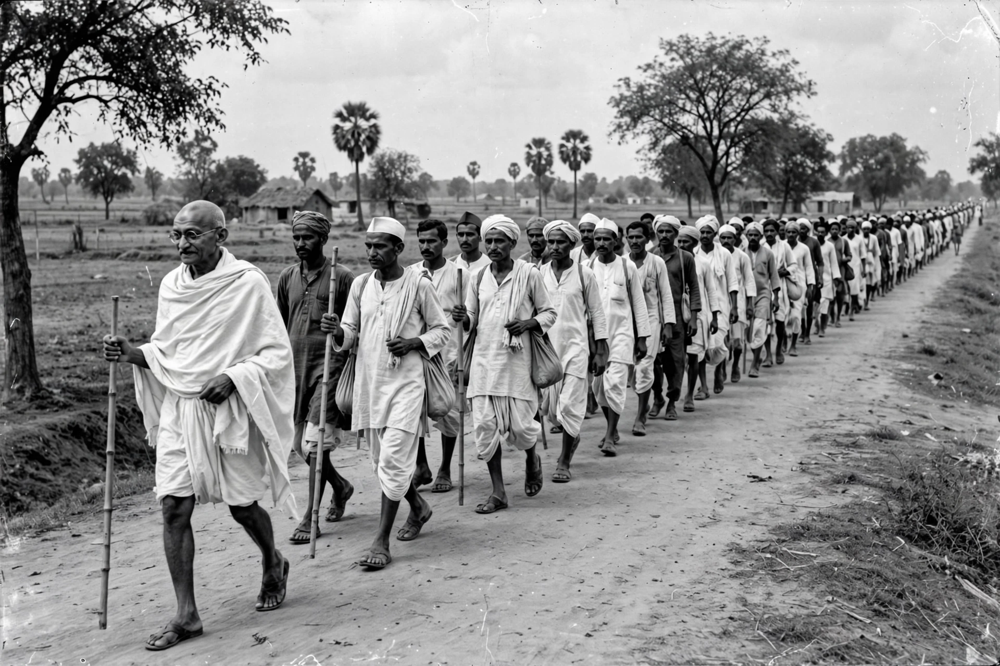

| Indian independence movement | |
|---|---|
| Period | 1857–1947 |
| Outcome | Independence and Partition, 15 August 1947 |
| Key organizations | Indian National Congress; All-India Muslim League |
| Key figures | Mahatma Gandhi, Jawaharlal Nehru, Muhammad Ali Jinnah, Subhas Chandra Bose |
The Indian independence movement was a series of historic events and campaigns by which British rule in India was ended and the independent nations of India and Pakistan were created in 1947. It encompassed constitutional politics, nonviolent mass civil disobedience, revolutionary violence, and armed struggle over a period of some ninety years.
The Indian Rebellion of 1857 was the first large-scale uprising against the East India Company. Direct Crown rule followed. In 1885 Indian professionals and intellectuals founded the Indian National Congress, initially a loyalist body petitioning for reform. The partition of Bengal in 1905 provoked the Swadeshi movement, boycotting British goods, and brought wider mass politics. The All-India Muslim League was founded in 1906 to represent Muslim interests.
Mohandas Karamchand Gandhi returned from South Africa in 1915 and transformed the Congress into a mass movement built on satyagraha — nonviolent resistance. The Amritsar massacre of 1919, in which British troops killed hundreds of unarmed demonstrators, radicalized opinion. Gandhi led the Non-Cooperation Movement (1920–22), the Salt March and Civil Disobedience Movement (1930–34) — protesting the salt tax with a 240-mile march to the sea at Dandi — and the Quit India Movement of 1942, demanding immediate British withdrawal during the Second World War. Alongside Congress, revolutionaries such as Bhagat Singh and the Indian National Army of Subhas Chandra Bose pursued armed paths.
Postwar Britain, under Clement Attlee's Labour government, moved to transfer power. Disagreement between Congress and Muhammad Ali Jinnah's Muslim League, which demanded a separate Muslim state of Pakistan, led Lord Mountbatten to advance the date of withdrawal. On 15 August 1947 British India was partitioned into the Dominion of India and the Dominion of Pakistan amid communal violence that killed hundreds of thousands and displaced millions — a trauma that still shapes the subcontinent, including the dispute over Kashmir.
See also: Partition of India, British Raj, Salt March